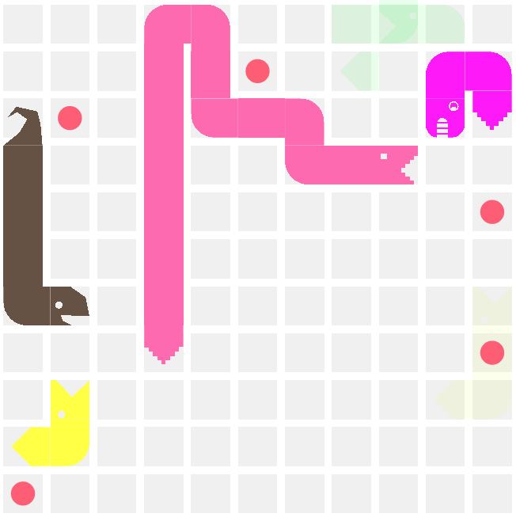
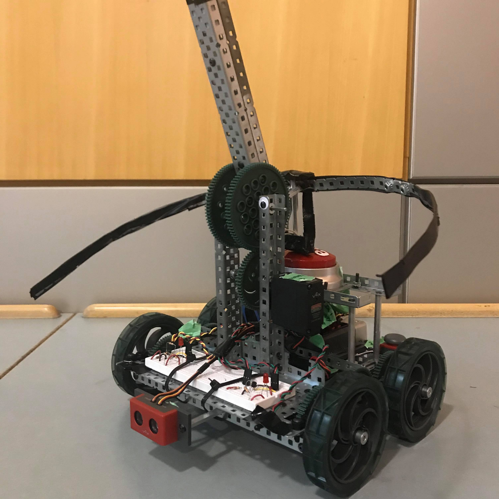

Loan Default Risk Analysis
Loan defaults are not only bad for business but are also stressful for the loan taker. Defaulting on a loan
not only means the bank lost money, but the client’s credit score has dropped significantly, and it is
unlikely a bank will be willing to lend money to the person in the future. If it is possible to predict and
maximize the repayment rate of loans, this would be a great benefit to both parties in the exchange.
The data for the this project was extracted from Kaggle's Home Credit Default
Risk Competition. My team applied a variety of advanced algorithms to engineer a machine
learning model for predicting loan default risk. Some of the advanced methods used are: Feature Engineering,
LightGBM, and using GridSearch for optimization.
We were able to achieve 75% prediction accuracy in the Kaggle competition, while the first place winner scored
80%

Google SPS
Google’s Software Product Sprint (SPS) is an 11-week invite-only program for
high-potential students. During SPS, my team developed a web application for finding compatible roommates
using Java, JavaScript, and leveraging Cloud Datastore to store user profiles. We collaborated with Software
Engineers at Google to use best practices and overcome challenges.
During my Google internship, I served as a panelist for the next iteration of the program to share my journey.

BattleSnake
BattleSnake is a national hackathon where developers across Canada
form teams to build AI snakes. At every game, a number of snakes
compete on the same board, with the winner being the last one
standing.
My team's AI was able of defeating multiple competing snakes, as well as a variety of bounty snakes, which are
snakes created by industry sponsors.
The snake has a variety of game strategies, playing defensively and chasing its tail when the board is
crowded, and taking risks when it only a few snakes remain. It also uses graph coloring algorithms to predict
if it will get stuck.

Engineering Robotics Competition
The Engineering Robotics Competiton is an annual, semester-long competition held for engineering students
where the task is given at the start of the semester. For 2019, the task was to create an autonomous robot to
tether cables to IR beacons, serving as a prototype for an underwater rover for internet cable tethering.
Our robot was the fastest to complete all of the competition tasks. The robot had various optimizations, such
as dynamic speed settings based on the distance from the target, as well as adjusting motors unevenly to steer
the robot. The robot was programmed using RobotC (a variant of C).